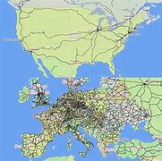
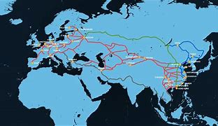
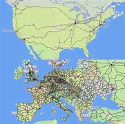
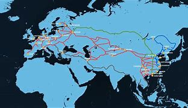

My personal information about train routes
Trains transporp pasengers from point a to point b on rails.There are railroads on every continent besides Antractida.In the Americas the trains are fast but there are less railroads than the other continets.In EU are the most railroads,it is full with train stations,points and routes.The trains in EU are modern but not as modern as Asia,but they are still good.In EU i easy to go from point a to point b,because there are a lot of trains stations that you can chose from.There are train stations in every country,state,city and village.Asia also has a lot of railroads and roads but their trains are more developed.Like the High-speed trains in Japan,China and South Korea.But in west Asia the trains are much bigger and messy because there are a lot of people and the iconomy of the countries are undeveloped.Like India,the iconomy is sort of developed but there are 1.4b people in the coutry and when they want to go somwhere with the train sometimes there are no doors on the trains and the people have to hang out of the trains so that all the people can fit in the wagons.I don't know how Africa is doing on theme trains but I know one thing.And that is that their trains are bad quality.In my coutry Bulgaria the trains are not that bad,but are still bad.It takes 8.5hours to get from Varna to Sofia,the trains are not that big.The interior is ruined by the community and the coutry doesn't take that much care about the trains.Unlike Bulgaria the train in Japan travels only for two hours four times the distance from varna to Sofia.But their trains are just more developed than ours and that the country take sirious care of their trains.
 
